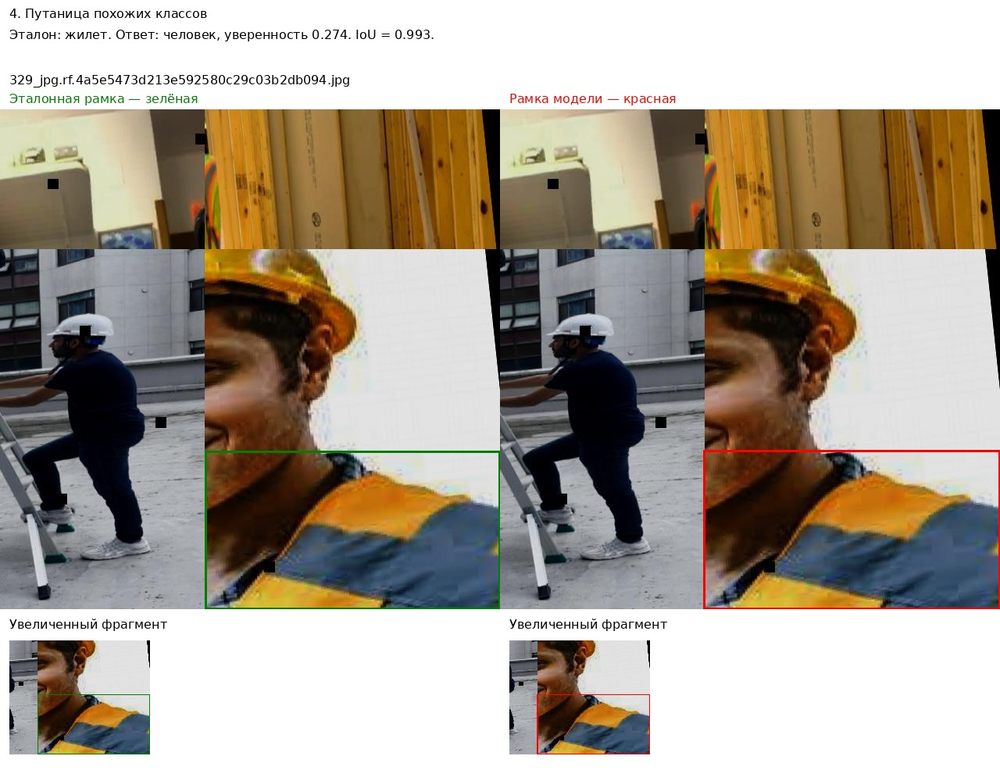
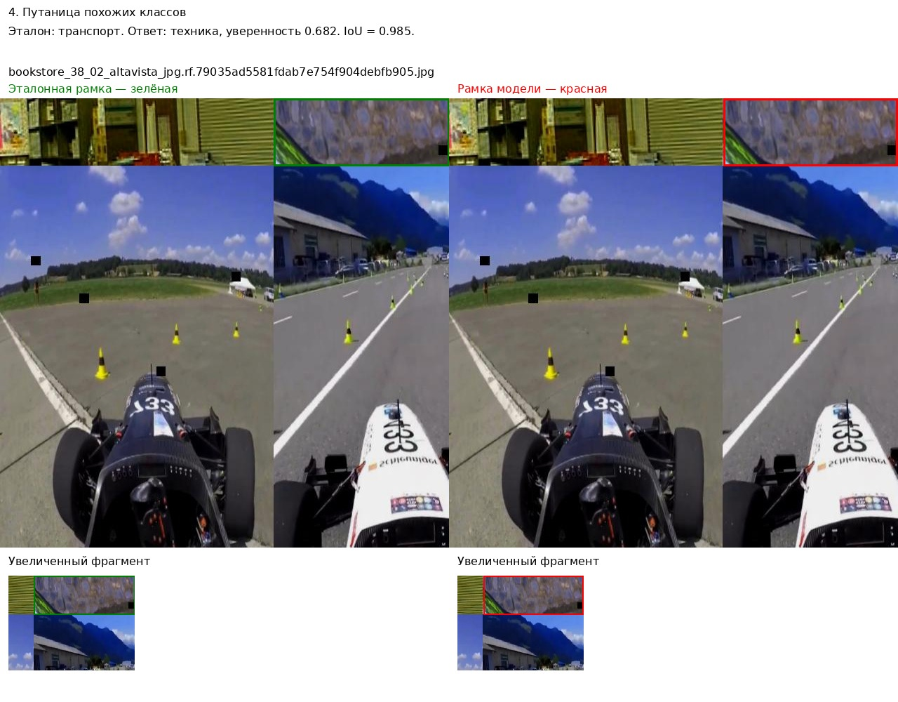
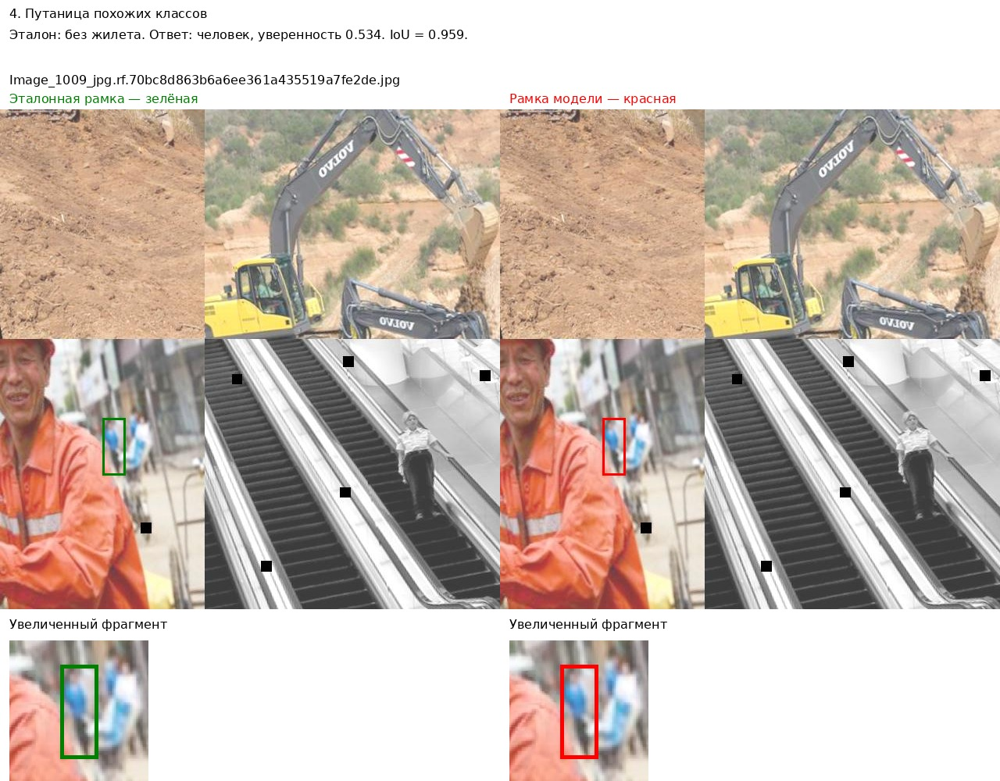
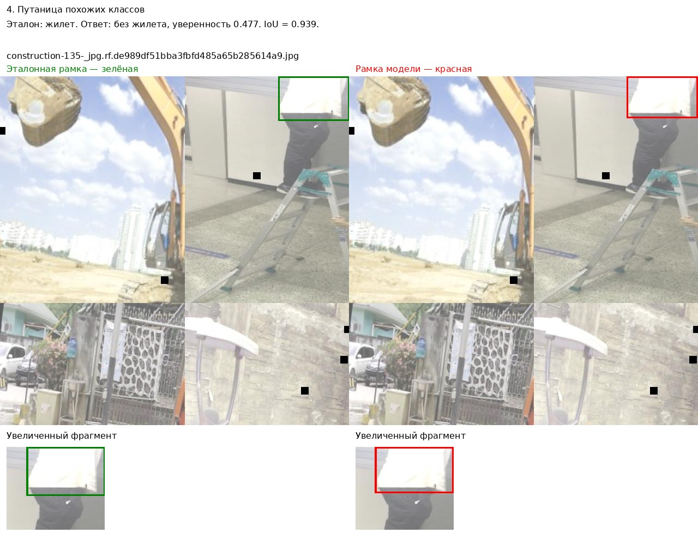

Все галереи4. Путаница похожих классов
IoU ≥ 0.5 у несопоставленных рамок похожих, но разных классов.
Слева эталон, справа ответ модели. Показаны только рассматриваемые рамки.
Кандидатов: 56; показано кадров: 4.

329_jpg.rf.4a5e5473d213e592580c29c03b2db094.jpg
Эталон: жилет. Ответ: человек, уверенность 0.274. IoU = 0.993.
bookstore_38_02_altavista_jpg.rf.79035ad5581fdab7e754f904debfb905.jpg
Эталон: транспорт. Ответ: техника, уверенность 0.682. IoU = 0.985.
Image_1009_jpg.rf.70bc8d863b6a6ee361a435519a7fe2de.jpg
Эталон: без жилета. Ответ: человек, уверенность 0.534. IoU = 0.959.
construction-135-_jpg.rf.de989df51bba3fbfd485a65b285614a9.jpg
Эталон: жилет. Ответ: без жилета, уверенность 0.477. IoU = 0.939.